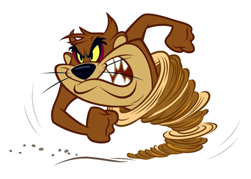
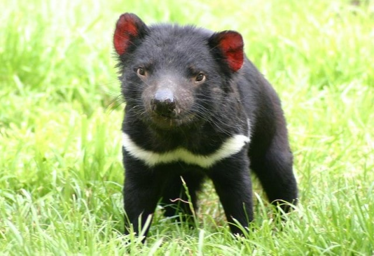

Isso mesmo o famoso Diabo-da-tasmânia (Sarcophilus harrisii) está ameaçado de extinção
devido a caça ilegal, ele ficou muito famoso pelos desenhos animados da Warner Bros


O diabo-da-Tasmânia é um marsupial nativo da ilha da Tasmânia,
na Austrália. De acordo com as pesquisas e acompanhamento
realizado pela IUCN, ele é considerado em perigo de extinção.
Os fatores que causaram sua diminuição são a caça ilegal,
atropelamento, destruição de seu habitat e doenças. Ameaçados
pela doença Os diabos-da-tasmânia são protegidos pelas leis
ambientais da Austrália. Entretanto, um mal, conhecido como
doença do tumor facial do diabo - Devil Facial Tumor Disease,
pode pôr fim à existência desses animais. Essa enfermidade é
um tipo de câncer. Na face do marsupial, nascem tumores que
aumentam de tamanho e o impede de se alimentar. Assim, ele
acaba morrendo de fome. Os cientistas procuram pela cura, mas
não descobriram o que causa a doença. Sabem, entretanto, que
ela é contagiosa entre os diabos-da-tasmânia. Por isso, tentam
remover os animais saudáveis para outros lugares. Em algumas
áreas da Tasmânia, 83% desses marsupiais estão infectados